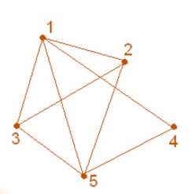

Лекція 2
Способи представлення графів
У цій лекції ви дізнаєтесь:
- як представити граф як матрицю, список суміжності або матрицю інцидентності;
- яке подання краще підходить для різних задач;
- як обирати оптимальну структуру для аналізу графа.
Навіщо потрібні різні подання
Один і той самий граф можна показати малюнком, таблицею або списком. Вибір подання залежить від задачі: для обчислень зручні матриці та списки, для пояснення - графічна схема.

Приклад графа з вагами зі слайдів лекції про подання графів.
Матриця суміжності
Квадратна матриця, де елемент aij дорівнює 1, якщо між вершинами i та j є ребро, і 0, якщо ребра немає. Для зваженого графа замість 1 записують вагу ребра.
Приклад матриці
| 1 | 2 | 3 | 4 | |
|---|---|---|---|---|
| 1 | 0 | 1 | 1 | 0 |
| 2 | 1 | 0 | 1 | 0 |
| 3 | 1 | 1 | 0 | 1 |
| 4 | 0 | 0 | 1 | 0 |
Список суміжності
Кожній вершині ставиться у відповідність список вершин, з якими вона з'єднана ребрами. Це компактне подання для розріджених графів.
- 1: 2, 3
- 2: 1, 3
- 3: 1, 2, 4
- 4: 3
Матриця інцидентності
У рядках записують вершини, у стовпцях - ребра. Значення 1 означає, що вершина інцидентна ребру.
Коли що використовувати
- Матриця суміжності зручна для насичених графів і швидкої перевірки наявності ребра.
- Список суміжності зручний для розріджених графів і обходів.
- Список ребер корисний для алгоритмів, які працюють безпосередньо з ребрами, наприклад для алгоритму Крускала.
- Матриця інцидентності добре показує зв'язок між вершинами та ребрами.
Питання для перевірки
- Чим матриця суміжності відрізняється від матриці інцидентності?
- Яке подання краще для розрідженого графа?
- Як у матриці суміжності зберігати ваги ребер?